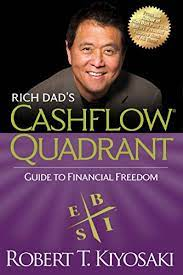
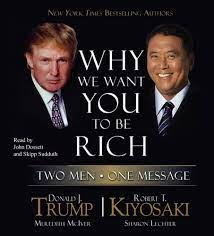

Robert Toru Kiyosaki (born April 8, 1947) is a Japanese-American entrepreneur, businessman and author. Kiyosaki is the founder of Rich Global LLC and the Rich Dad Company, a private financial education company that provides personal finance and business education to people through books and videos.
This book is not just about money. It's about how we are taught to think; how we are programmed by schools, family, and friends to look at the rich as greedy no good bloodsuckers and opportunities as risks. It is an attempt to reprogram minds to look at why we do what we do.. why do we buy all these shoes, clothes, cars, jewelry.. have we earned it or are we just trying to maintain an image?
"Rich Dad Poor Dad" is a book by Robert Kiyosaki that tells the story of a boy with two fathers, one rich and the other poor.12 The book focuses on how to use money as a tool for wealth development and teaches the difference between working for money and having your money work for you.4 The book has been translated into dozens of languages and has become the #1 personal finance book of all time.0 The author compares both fathers' principles, ideas, financial practices, and degree of dynamism, and how his real father, the poor and struggling but highly educated man, paled against his rich dad in terms of asset building and business acumen.3 The book explains several methods of managing personal finance effectively and teaches the difference between working for money and having your money work for you.
Rich Dad Poor Dad has sold over 32 million copies[4]It was a very high selling book when it was released[5]. It was published in 1997 and sold very quickly all around the world. Since this day it has been around for about 26 years now, and is still selling strong. It was popular on TikTok recently and people are now learning the marketing technique this book is teaching to become a millionaire. more than 51 languages across more than 109 countries, been on the New York Times bestsellers list for over six years,[6] launched a series of books and related products; and received positive reviews from some critics.[7] Actor Will Smith said he taught his son about financial independence by reading the book.[8] PBS Public Television station KOCE aired a 55-minute presentation of Kiyosaki titled "A Guide to Wealth" in 2006, which essentially summarises his Rich Dad Poor Dad book. PBS also honored him with an excellence in education award in 2005.[9] Donald Trump did a literary collaboration with Kiyosaki in 2006 called Why We Want You to Be Rich, Two Men One Message, and a second book called Midas Touch: Why Some Entrepreneurs Get Rich — And Why Most Don't in 2011.[10] American fashion entrepreneur and investor Daymond John has called the book one of his favorites.[11]
A competing financial self-help writer, John T. Reed, says, "Rich Dad, Poor Dad contains much wrong advice, much bad advice, and virtually no good advice." He also states, "Rich Dad, Poor Dad is one of the dumbest financial advice books I have ever read. It contains many factual errors and numerous extremely unlikely accounts of events that supposedly occurred."[12] Slate reviewer Rob Walker called the book full of nonsense, and said that Kiyosaki's claims were often vague, the narrative "fablelike", and that much of the book was "self-help boilerplate", noting the predictable common features of such books were present in Rich Dad, Poor Dad. He also criticizes Kiyosaki's conclusions about Americans, American culture, and Kiyosaki's methods.[1]